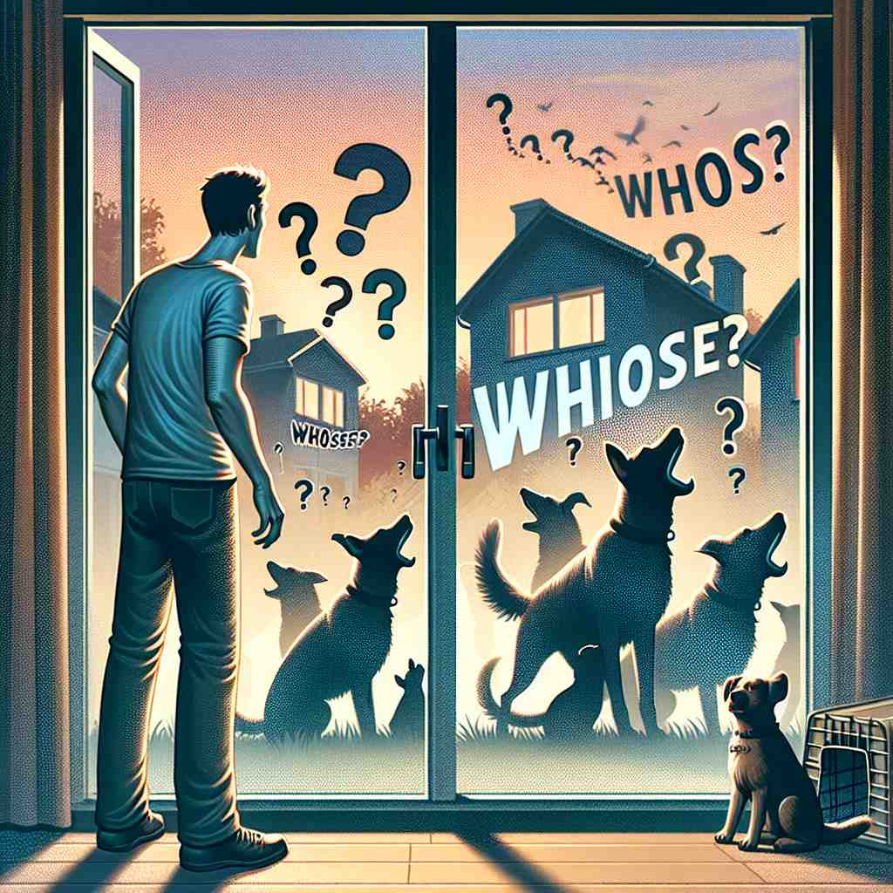

💬 I wonder whose book is this on the table. 我想知道这本书是桌子上谁的。

💬 The teacher asked, 'Whose book is that on the desk?' 老师问：“那桌子上的书是谁的？”

💬 He wants to know whose dog is barking at the door. 他想知道是谁的狗在门口叫。
💬 The children are curious about whose toy is this. 孩子们对这是谁的玩具感到好奇。
🧠 'Whose'的核心含义是表示所有权或关联性。无论是在疑问句中询问，还是在从句中陈述，都围绕着这个核心概念。记忆时，可以想象一个问号(?)悬在某物上方，表示在询问'这是谁的？'这个画面可以帮助你联想'whose'在各种语境中的用法。
🔈 [huːz]
🗝️ pronoun, determiner used to ask or talk about who owns something or has a connection with someone 用于询问或谈论谁拥有某物或与某人有联系。
🎭 在一个喧闹的生日派对上，一个男孩发现了一顶无人认领的奇特帽子。他举起帽子，环顾四周，大声问道：'Whose hat is this?' 众人纷纷转头，寻找帽子的主人。
💬 Whose book is this? 这本书是谁的？
🌳 由疑问代词 "who" 加上所有格后缀 "-s" 组成，表示 "谁的"。常用于询问物品或属性属于谁。
🕸️ 1. who: 谁 2. whom: 谁（宾格） 3. whoever: 无论谁，任何人
💡 可以联想为 "who" 的所属形式，在询问归属时使用，比如“这是谁的？”中“谁的”就是 "whose"。通过将 "who" 和所有格联系起来，帮助记忆其用法。